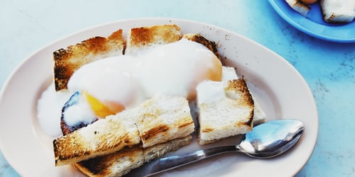
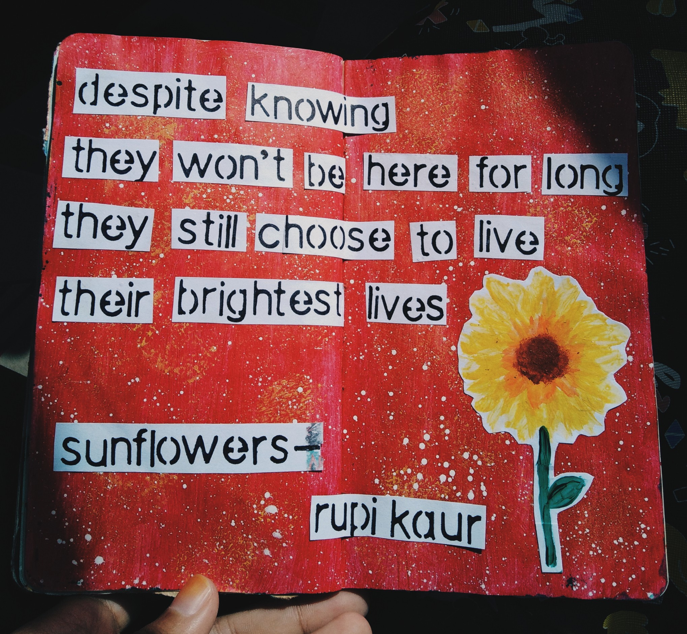
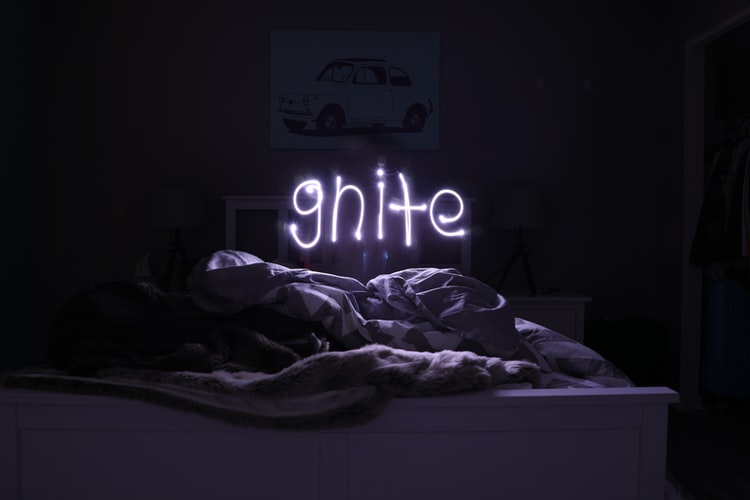
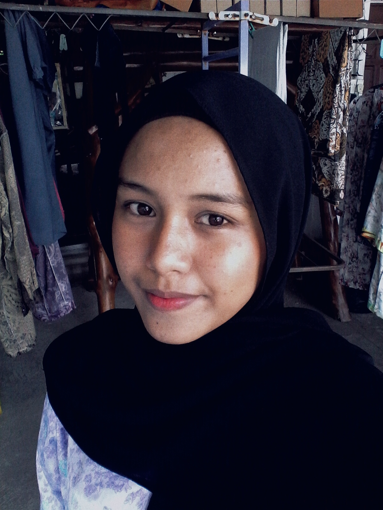
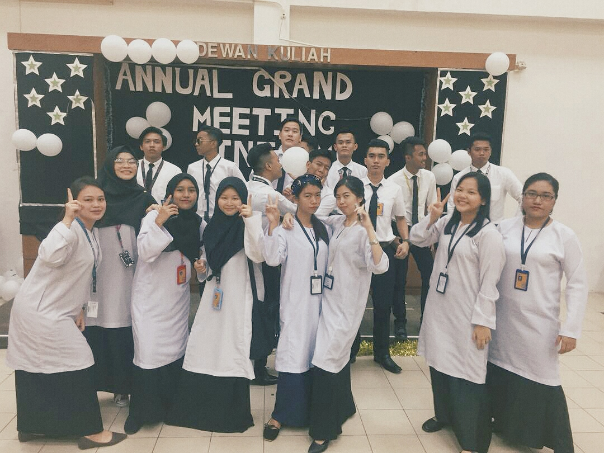
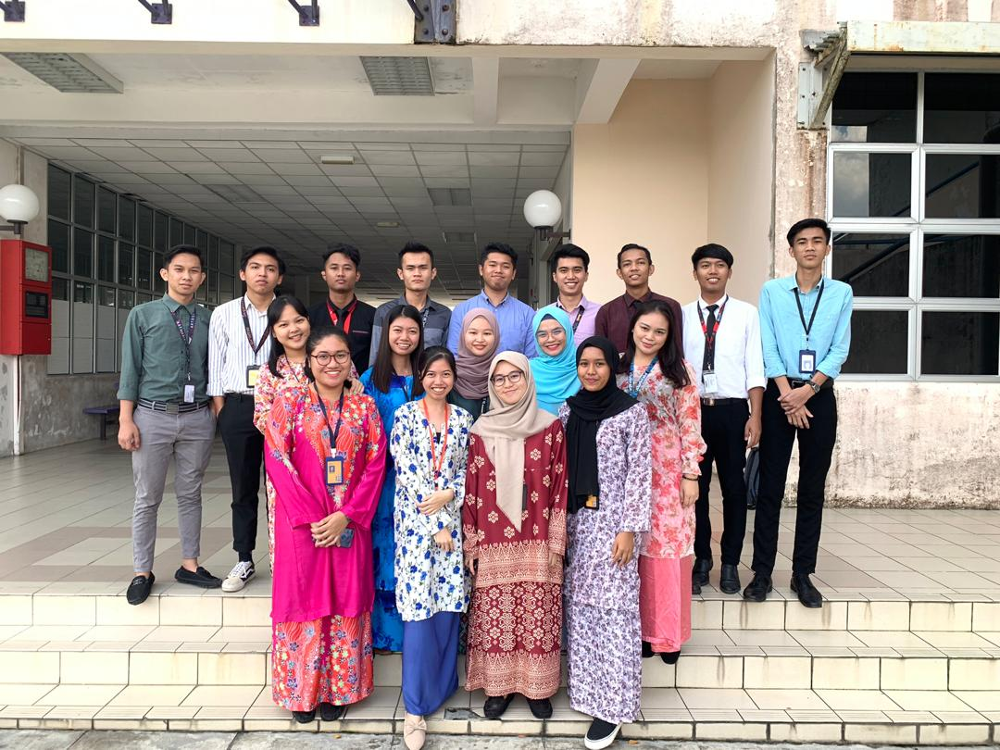

My Morning Routine
Apr 20, 2020
In the morning,
I usually wake up around 7 in the morning and spend about 10 minutes laying in the bed before get up and straight to the bathroom. After finish, I'll start with my skincare routine that I have been doing long time ago but the result is still the same hm:(
After finish all the stuff, I head up to the kitchen to make some breakfast. Starting your day with a cup of Mocha is the best things! and also toast.
After breakfast, I'll get ready for the online classes and my classes usually start at 10 in the morning and end around 12 noon.
Day Routine
April 20, 2020
Free Time!!
After finish my online classes and lunch, I usually spend my free time doing art journal. I started doing art journal since last year and it is really fun. Besides that, I also spend my free time in the afternoon by doing the assessment that have been given by my lecturers.
Night Routine
April 20, 2020
Its time to sleep! zzzz
After finish dinner and prayer with family, me and my sisters will help clean the kitchen. Then I usually proceed to complete all the assignments that have been given to me and after that I usually scroll through social media like Instagram, Twitter or Facebook or watch some videos in Youtube.
Next, before bed, I brush my teeth and wash my face and get ready all my notes for the next class tomorrow so I don't have to worry the next morning. Then, I set the alarm for the next day and read some things on ThoughtCatalog website before I go to sleep. I have share my day, how about yours? :)
About Me
Hello there!
I'm Arnieza, a twenty-xx years old dreamer and a full time student who loves to collect colourful pen and eat heheh
My Classmates


